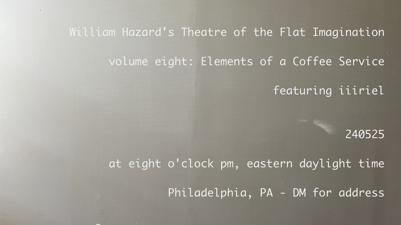
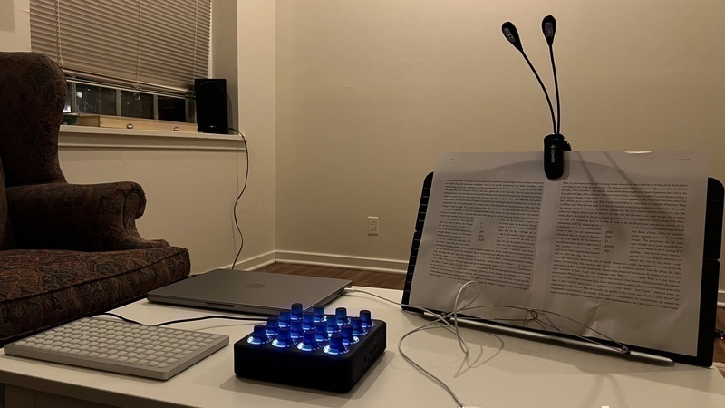
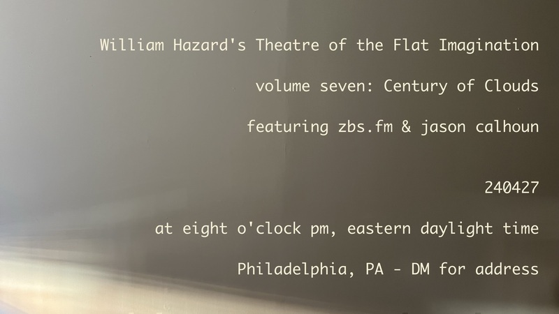
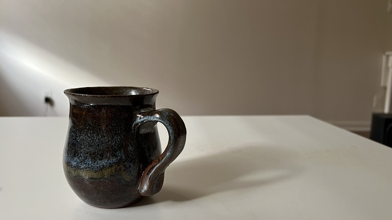
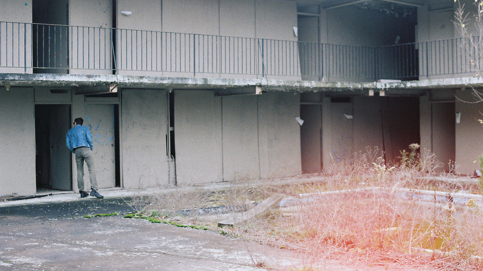
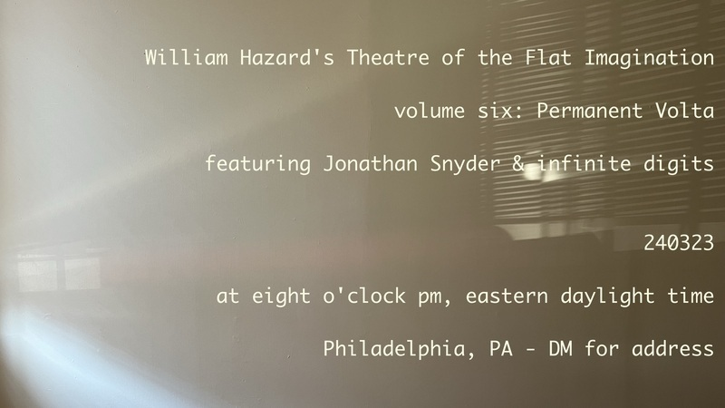
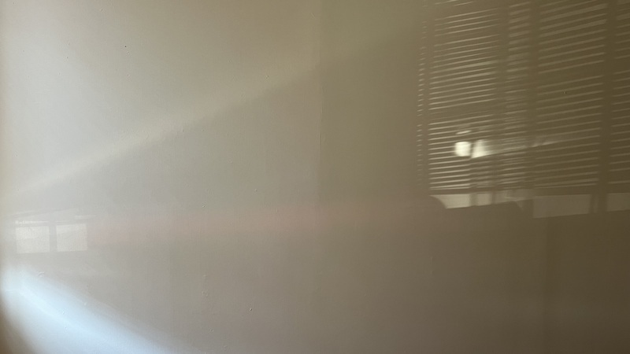
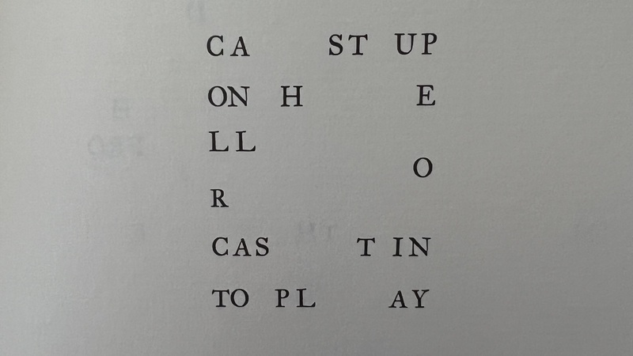

log
got a new old thing up over at voicemail poems. The piece is titled "Resentment: Big Water." It's part of a series I was writing a couple years ago about things I felt resentful about, in which I was trying to use the work as a means through which to release that resentment, to free myself of it.
At the time, I had prolit in mind as a potential home for this, but as the piece developed, it started to veer away from what felt like prolit territory to me, and for a while, I just shelved it. A couple months ago, though, I was hanging out with Amy Saul-Zerby at Liner Notes (a wonderful reading series hosted by Alina Pleskova at 48 Record Bar here in Philly), and Amy and I got to talking about voicemail poems, and it just clicked with me that vmp was the right home for this piece. I sent it over to Amy, and she agreed, and now, here it is, out in the world. I hope you like it.

Theatre of the Flat Imagination, volume eight: Elements of a Coffee Service† will occur at eight o'clock pm, eastern daylight time, on May 25th, 2024 and will feature performances by iiiriel & me. If you'd like to attend this event, please get in touch with me by email, and I'll send you the address.
†Elements of a Coffee Service is the title of a book by Robert Glück, originally published in 1982, by Four Seasons Foundation

rehearsing for _mix_lit and remembering, over and over again, why seamstress is so great

Theatre of the Flat Imagination, volume seven: Century of Clouds† will occur at eight o'clock pm, eastern daylight time, on April 27th, 2024 and will feature performances by zbs.fm & jason calhoun. If you'd like to attend this event, please get in touch with me by email, and I'll send you the address.
†Century of Clouds is the title of a book by Bruce Boone, originally published in 1980, by Hoddypoll Press, and reissued in 2009, by Nightboat Books
seamstress is really great


📷 John Martin 📸

Theatre of the Flat Imagination, volume six: Permanent Volta† will occur at eight o'clock pm, eastern daylight time, on March 23rd, 2024 and will feature performances by Jonathan Snyder & infinite digits. If you'd like to attend this event, please get in touch with me by email, and I'll send you the address.
†Permanent Volta is the title of the 2021 book of poetry by Rosie Stockton. Published by Nightboat Books, it was the recipient of the 2019 Sawtooth Prize. Rosie Stockton’s poems have been published by Social Text Journal, VOLT, Jubilat, Apogee, Mask Magazine, Tripwire and WONDER PRESS. They hold an M.A. in Creative Writing from Eastern Michigan University and are currently a Ph.D. Student in the Gender Studies Department at UCLA. We are tremendously grateful to Rosie for their permission to borrow their book’s title for our performance.


excerpt from A/An by Mandy Gutmann-Gonzalez, available from End of the Line Press
[ former]
[further]
[final]
[first]
williamthazard [at] pm.me